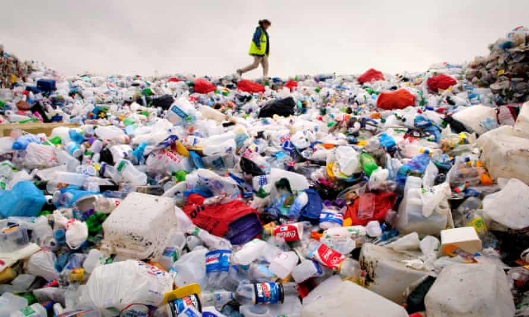

How to prevent deforestation
.jpg)
The process of reckless deforestation is perceptible in certain districts.
The destruction of trees by charcoal-burners has resulted in the almost complete deforestation of the island.
Deforestation has environmentalists worried for numerous reasons
Deforestation occurs when a forested area is transformed into a non-forested area.
Under de Quincey's administration the islands prospered; the cultivation of cotton and coffee was then begun, much of the land being deforested for this purpose - a deforestation practically completed when vanilla was introduced.
Ban of plastic

1) Indiscriminate use of Plastic bags results in littering.
2) Use of plastic bags depletes our Natural resources such as water, trees and farm produce.
3) It poses a threat to marine life resulting in a decrease in the number of sea animals.
4) The use of 1 Trillion Plastic bags worldwide eventually finds its way to landfills polluting the environment.
5) Burning of plastic bags releases toxic gases into the atmosphere.
6) It poses a menace to wildlife as plastic bags when an animal accidentally ingests it.
7) Dumping of plastic bags poses a threat to the environment.
8) Production of Plastic bags releases harmful gases into the atmosphere.
9) The manufacture of plastic needs millions of litres of oil.